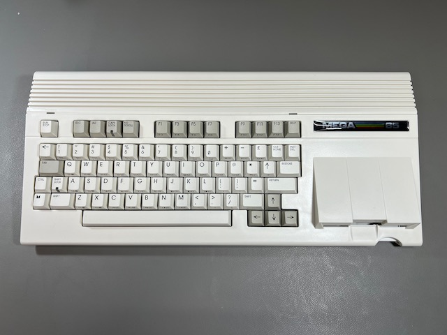

MEGA65 Welcome Guide 2022¶
Hello! You’ve reached the MEGA65 Welcome Guide 2022. This Guide is intended for new owners of the MEGA65 personal computer, specifically those that received their MEGA65 in the year 2022. It contains answers to common questions from early adopters not (yet) answered in the official documentation about the first production batch of hardware and factory-installed software, and recommends best practices for continued enjoyment of your new computer. It was written as an unofficial supplement to the MEGA65 User’s Guide included with the computer.
This is meant to be a short-lived living document. Eventually, official documentation updates and future manufacturing runs will make this Guide obsolete. If you’re one of the first 1,400 people to purchase a MEGA65, this Guide will help you get up and running.
Oh hi, I’m Dan, known as dddaaannn#7325 in the MEGA65 Discord. If you notice anything in this guide that needs updating, or if you discover a topic not covered by the official manual that you feel new owners should know about, please report an issue. Thank you!
The contents of this Welcome Guide:
- Welcome!
- Things you’ll need
- Try this first!
- Important concepts
- Determining the versions of things
- Opening the MEGA65 case
- Accessing the MEGA65 Filehost
- Setting up the microSD card
- Updating the core firmware
- Using disks
- Using the JTAG connection
- Joining the community
- Video display compatibility
- Known hardware issues
- Questions and answers
- Resources